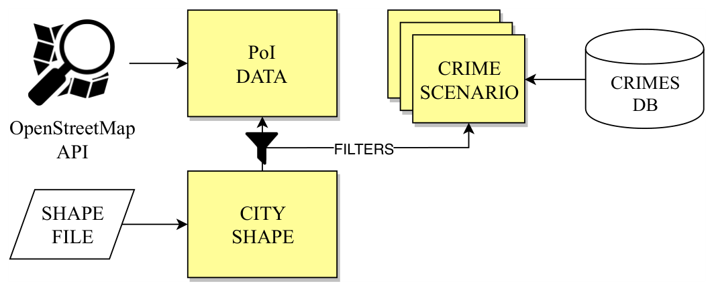
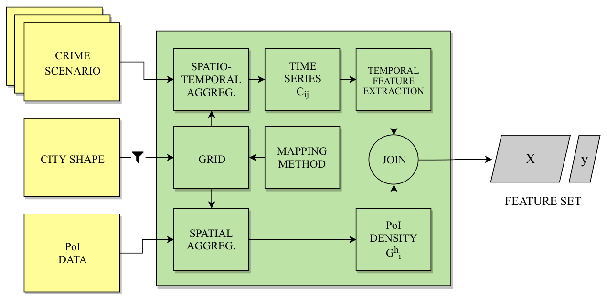
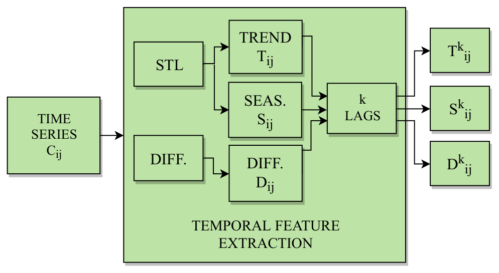
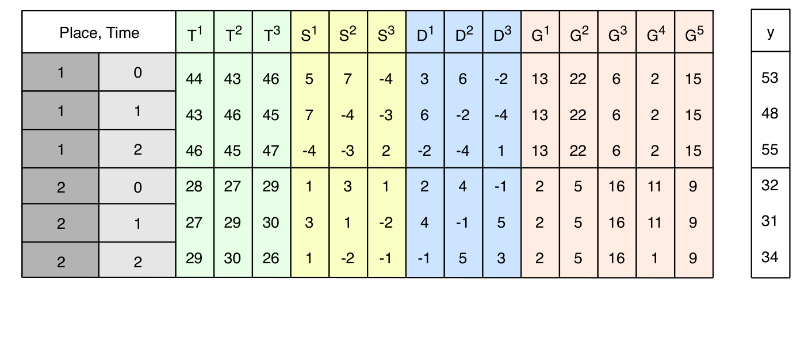
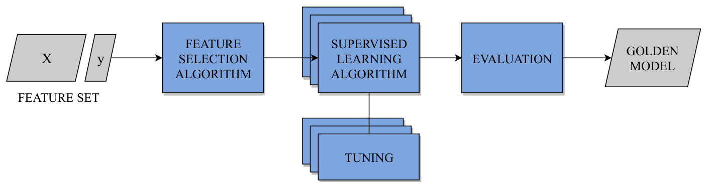
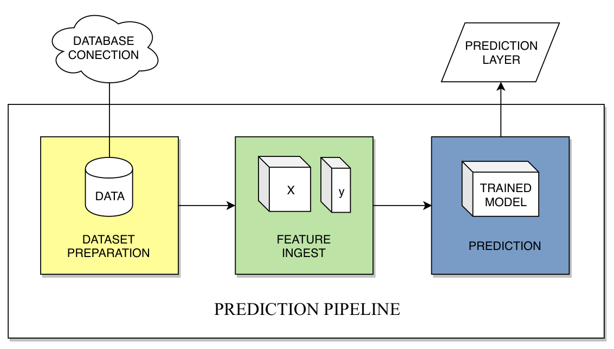

Predspot¶


Overview 📖¶
Predspot is a Python library for spatio-temporal crime prediction and hotspot detection. It turns a table of georeferenced, timestamped crime events into a grid of places and a sequence of periods, builds time series features for every place and trains a scikit-learn model to forecast where the next period's hotspots will be.
Key features:
- Spatio-temporal crime mapping: kernel density estimation (KDE) on point grids, or event counts on hexagonal and square grids, at daily, weekly or monthly resolution
- Time series feature engineering: lagged autoregressive, difference, seasonal and trend features (STL decomposition)
- A prediction pipeline that accepts any scikit-learn regressor, with time series cross-validation and recursive multi-step forecasts
- Study areas fetched from OpenStreetMap by name
- A synthetic crime generator (hotspots, trend, annual, weekly and hourly patterns) to try everything without real data
Full documentation, with a quickstart, a user guide and the API reference, lives at
https://adaj.github.io/predspot/. A complete, executed walkthrough for the city
of Natal is in examples/natal.ipynb.
How to use? 🚀¶
Install from PyPI (Python 3.10 or newer):
pip install predspot # core
pip install "predspot[contour]" # + GeoJSON contour export (geojsoncontour)
pip install "predspot[examples]" # + jupyter, to run the example notebooks
Not on PyPI yet? Install straight from GitHub:
Basic usage example:
from predspot import Dataset, PredictionPipeline
from predspot.crime_mapping import KDE, create_gridpoints
from predspot.feature_engineering import Seasonality, Trend, Diff
from predspot.utilities import PandasFeatureUnion
from sklearn.ensemble import RandomForestRegressor
# crimes_df needs `tag`, `t`, `lon`, `lat` columns;
# study_area_gdf is a GeoDataFrame with the boundary of the study area
dataset = Dataset(crimes_df, study_area_gdf)
# Monthly KDE on a 1 km point grid, lag features, random forest
pipeline = PredictionPipeline(
mapping=KDE(tfreq='M', grid=create_gridpoints(study_area_gdf, resolution=1)),
fextraction=PandasFeatureUnion([
('seasonal', Seasonality(lags=12)),
('trend', Trend(lags=12)),
('diff', Diff(lags=12))
]),
estimator=RandomForestRegressor()
)
# Fit and predict the next month for every grid point
pipeline.fit(dataset)
predictions = pipeline.predict()
Prefer counting events per cell instead of a density surface? Use the
hexagonal grid with QuadratCount:
from predspot.crime_mapping import QuadratCount, create_gridhexagonal
mapping = QuadratCount(tfreq='W', grid=create_gridhexagonal(study_area_gdf, resolution=1))
Study area from OpenStreetMap and synthetic data¶
You do not need real data to try Predspot. Fetch a city boundary from OpenStreetMap and generate synthetic events with spatial hotspots and realistic temporal patterns (trend, annual cycle, day-of-week and hour-of-day profiles):
from predspot import Dataset, get_city_shape, generate_crimes
city = get_city_shape("Natal, RN, Brazil")
crimes = generate_crimes(city, n_events=5000, n_hotspots=4,
start="2019-01-01", end="2020-12-31", seed=0)
dataset = Dataset(crimes, city)
dataset.plot()
Or run the default pipeline in one call:
from predspot.pipeline import generate_testdata, run_prediction_pipeline
crimes, study_area = generate_testdata(2000, '2019-01-01', '2020-12-31', seed=0)
predictions, pipeline = run_prediction_pipeline(crimes, study_area, grid_resolution=1)
print(pipeline.evaluate('r2', cv=3))
Input data format 📊¶
The crime data should be a pandas DataFrame with the following required columns:
tag: crime typet: timestamplon: longitude (WGS84 degrees)lat: latitude (WGS84 degrees)
The study area should be a GeoDataFrame (with a CRS) defining the boundaries of interest.
The Predspot framework 🧭¶
Predspot implements the framework described in Chapter 3 of the master's thesis Predspot: predicting crime hotspots with machine learning (Araújo Jr., 2019). The framework is split into two phases, mirroring the training and prediction steps of a machine learning system: model selection, where a model is trained, evaluated and saved, and prediction service, where that model is used operationally, period after period. The figures below are reproduced from the thesis.
Model selection¶
1. Dataset preparation (Figure 7) — everything starts from three inputs: a crime database, the city shape and, optionally, auxiliary Points of Interest (PoI) from OpenStreetMap.

- Crime records must carry at least latitude, longitude, timestamp and crime type.
- The city shape acts as a spatial filter: events and PoI outside the boundary are dropped, along with duplicates and "default" locations assigned to badly registered events.
- Crimes are split into crime scenarios (one per crime type, and possibly per day/night period) that are modelled separately, since aggregating different crime types blurs their distinct spatial patterns.
- In the package:
Dataset(validation, WGS84 points) andget_city_shape/load_study_area(city boundary from OpenStreetMap).
2. Feature ingest (Figures 8, 9 and 10) — the step that assembles the
feature matrix X and the target y. Before it starts, two units of analysis
are chosen: the spatial unit (a grid derived from the crime mapping method)
and the temporal unit (daily, weekly or monthly samples — finer units give
sparser, harder-to-predict series).

- Spatio-temporal aggregation: the mapping method (KDE on a point grid, or
counts on polygonal cells) turns the events of each period into one value per
grid cell, producing the time series
C_ijof cell i at period j. - Temporal feature extraction (Figure 9): each cell's series is decomposed
with STL into trend (
T) and seasonal (S) components, and differenced (D); the features are the k most recent lags of each component, and the target is the series value one period ahead.

- Spatial aggregation of PoI (optional): the density of each PoI category
around each cell (
G) describes places geographically, complementing the temporal features. - Join: temporal and geographic features are joined into one row per
(place, time)pair — the layout shown in Figure 10.

- In the package:
create_gridpoints/create_gridhexagonal/create_gridsquares(grid),KDE/QuadratCount(spatio-temporal aggregation),Trend,Seasonality,Diff,ARandPandasFeatureUnion(temporal feature extraction and join). PoI features are not part of the current package release.
3. Machine learning modelling (Figure 11) — the feature set feeds a model-agnostic training loop.

- Feature selection first: noisy lags and PoI layers are filtered by a learning-based selector (an embedded, tree-based method in the thesis).
- Several supervised algorithms are trained and tuned, rather than betting on a single one; the thesis compared random forests and gradient boosting.
- Evaluation uses time series K-fold cross-validation (train on the first k folds, test on fold k+1), so no information from the future leaks into training. The best model per crime scenario is the golden model, saved together with its selected features.
- In the package:
PredictionPipeline(withFeatureScaling,FeatureSelectionandModelwrappers andevaluate()for the time series CV).
Prediction service¶
4. Prediction pipeline (Figure 12) — the model selection steps are tailored for operation.

- For each new period, only the most recent events are loaded (enough to compute the k lags), filtered and split into scenarios as before.
- The spatio-temporal aggregation and temporal feature extraction are repeated; PoI features are reused, since they do not change over time.
- The previously selected features are kept and the golden model returns the
crime incidence level
y_iof every place i one period ahead — a prediction layer ready to be mapped. The process repeats every period. - In the package:
PredictionPipeline.predict()appends each forecast to the series and advances one period, so repeated calls walk forward in time.
5. Web service — the thesis also outlines how to wrap the pipeline in a decoupled service (with a file volume for data, models and predictions, and an ETL controller triggering the pipeline each period) that serves predictions as GeoJSON to existing GIS tools. That layer is outside the scope of this package, which covers the model selection phase and the prediction pipeline.
Resources 📚¶
- Master's thesis (full description of the framework, evaluation on Natal and Boston, feature importance analysis): Araújo Jr., A. (2019). Predspot: Predicting Crime Hotspots with Machine Learning. M.Sc. dissertation, PPgSC/UFRN, Natal, Brazil.
- The earlier version of the framework: Araújo et al. (2018), Towards a crime hotspot detection framework for patrol planning (HPCC/SmartCity/DSS).
- Methods worth reading about: kernel density estimation for hotspot mapping (Chainey, Tompson & Uhlig, 2008), STL time series decomposition (Cleveland et al., 1990) and time series cross-validation (Bergmeir, Hyndman & Koo, 2018).
Cite us¶
If you use Predspot in your research, please cite us:
APA:
Araújo Jr., A. (2019). Predspot: Predicting Crime Hotspots with Machine Learning. Master's dissertation, UFRN (Universidade Federal do Rio Grande do Norte), Natal, Brazil.
Araújo, A., Cacho, N., Bezerra, L., Vieira, C., & Borges, J. (2018, June). Towards a crime hotspot detection framework for patrol planning. In 2018 IEEE 20th International Conference on High Performance Computing and Communications; IEEE 16th International Conference on Smart City; IEEE 4th International Conference on Data Science and Systems (HPCC/SmartCity/DSS) (pp. 1256-1263). IEEE.
or bibtex:
@mastersthesis{araujo2019predspot,
title={Predspot: Predicting crime hotspots with machine learning},
author={Araujo, Adelson},
year={2019},
school={Universidade Federal do Rio Grande do Norte},
url={https://repositorio.ufrn.br/server/api/core/bitstreams/3655b8e1-2f32-4ce9-af9c-0e6b64d7af84/content}
}
@inproceedings{araujo2018towards,
title={Towards a crime hotspot detection framework for patrol planning},
author={Ara{\'u}jo, Adelson and Cacho, N{\'a}dia and Bezerra, Lucas and Vieira, Carlos and Borges, Jo{\~a}o},
booktitle={2018 IEEE 20th International Conference on High Performance Computing and Communications; IEEE 16th International Conference on Smart City; IEEE 4th International Conference on Data Science and Systems (HPCC/SmartCity/DSS)},
pages={1256--1263},
year={2018},
organization={IEEE}
}
Development ⚡¶
Predspot has five main modules:
dataset_preparation: preparing and managing crime datasets and study areas.crime_mapping: spatial and temporal crime mapping — point, hexagonal and square grids, KDE density surfaces, per-cell counts (QuadratCount) and study areas from OpenStreetMap.feature_engineering: time series feature engineering (seasonality, trend, difference and autoregressive lags).ml_modelling: the prediction pipeline and model evaluation.synthetic: synthetic crime events (hotspots + temporal patterns) inside any study area.
From source, for development:
git clone https://github.com/adaj/predspot.git
cd predspot
pip install -e ".[dev,contour,examples]"
ruff check src tests # lint
pytest # ~10 s
See CONTRIBUTING.md for the release process and CHANGELOG.md for what changed between versions.
Contributing 💡¶
Contributions are welcome! Please feel free to submit a Pull Request.
Guidelines for contributing: 1. Fork the repository 2. Create your feature branch 3. Commit your changes 4. Push to the branch 5. Create a new Pull Request
License 📜¶
BSD 3-Clause
Status 🚧¶
Predspot started as part of a master's thesis (2018-2019) and was revived in 2026. The code base now targets Python 3.10+ with current versions of pandas (>= 2.2), GeoPandas (>= 1.0), scikit-learn and statsmodels, and is covered by a test suite and continuous integration. It remains research software: use it as a reference implementation and adapt it to your own data.